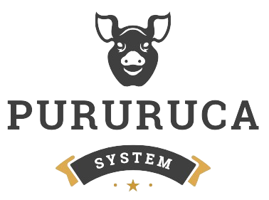

<div class="header">
  
  <nav class="nav-links">
    <a routerLink="/" routerLinkActive="active">Home</a>
    <a routerLink="/login" routerLinkActive="active">Login</a>
    <a routerLink="/casdastro-suino" routerLinkActive="active"
      >Cadastrar Suíno</a
    >
    <a routerLink="/listagem-suino" routerLinkActive="active">Suinos</a>
  </nav>
</div>
